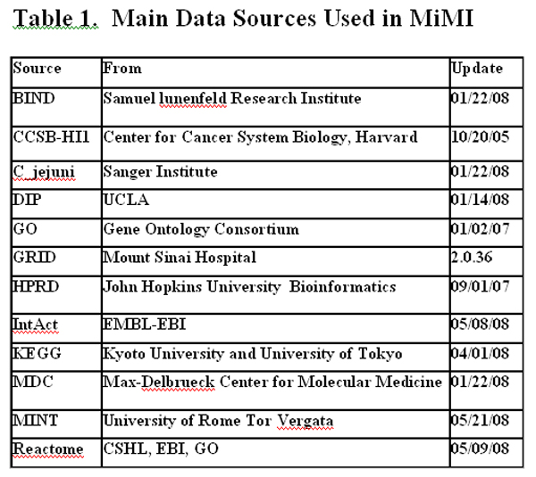
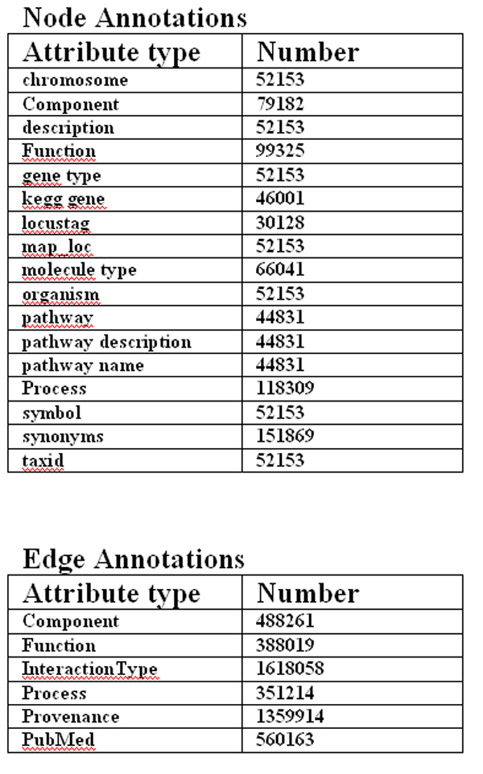
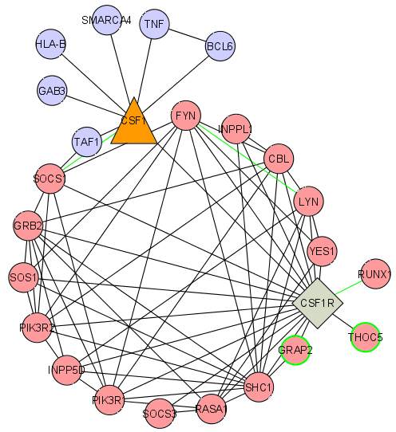
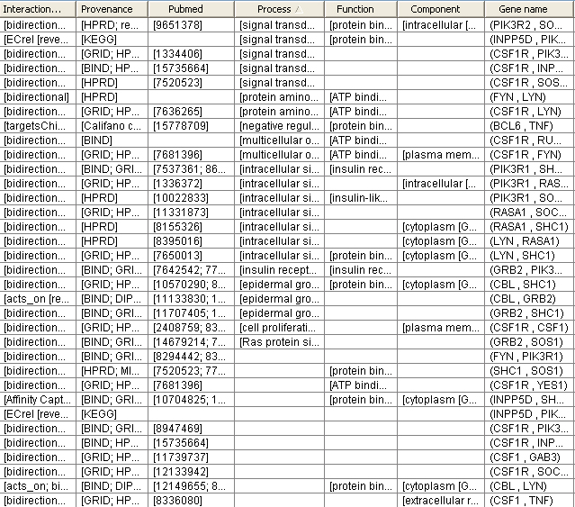
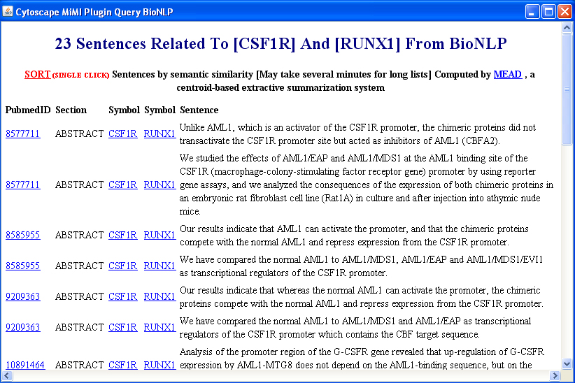
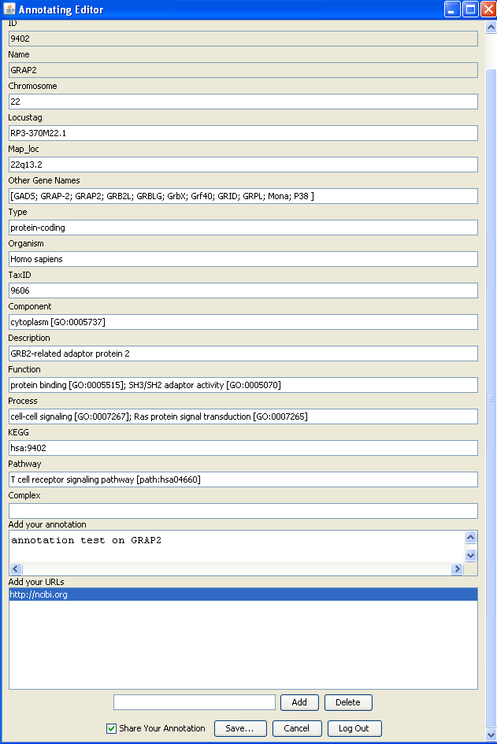
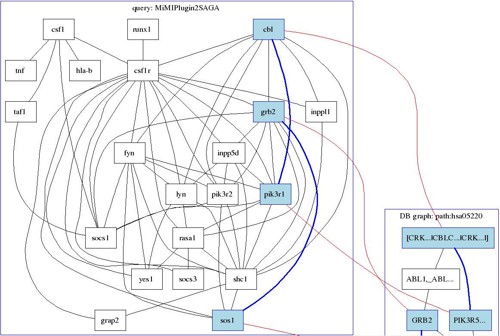

Data sources used in MiMI

Node/Edge attributes

Graph 1
A interaction network for "csf1r" with extended interactions for "csf1" from MiMI

Graph 2
Interaction attributes for the edges of csf1r network, including Interaction type, Provenance, PubMed, Go term etc.

Graph 3
Literature information for edge CSF1R to RUNX1 retrieved from BioNLP database

Graph 4
Annotation Editor shows node (GRAP2) attributes from MiMI and user added annotations and URL

Graph 5
One of the matches of CSF1R network to KEGG Human pathway
